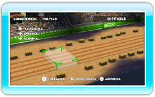
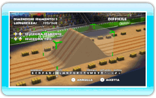

20 |
Modificare circuiti |
 |
 All’inizio, i nuovi circuiti sono composti da una serie di segmenti piatti che puoi cambiare a tuo piacimento. Per modificare un circuito, seleziona i segmenti premendo destra o sinistra su
 . .
Premi
verso l’alto per eliminare il segmento selezionato.Premi
verso il basso per inserire un nuovo segmento davanti al segmento selezionato.Premi
 per modificare il segmento selezionato. per modificare il segmento selezionato.  Per cambiare un segmento selezionato, premi sinistra o destra su
. Premi verso l’alto o verso il basso per andare al tipo di segmento successivo.Premi per accettare il segmento selezionato.
Premi
 per collaudare il tuo circuito. Seleziona COLLAUDA DALL’INIZIO per iniziare il collaudo dall’inizio del circuito o COLLAUDA DA QUI per iniziare il collaudo dal segmento attualmente selezionato. per collaudare il tuo circuito. Seleziona COLLAUDA DALL’INIZIO per iniziare il collaudo dall’inizio del circuito o COLLAUDA DA QUI per iniziare il collaudo dal segmento attualmente selezionato. |
 |
 |
 |